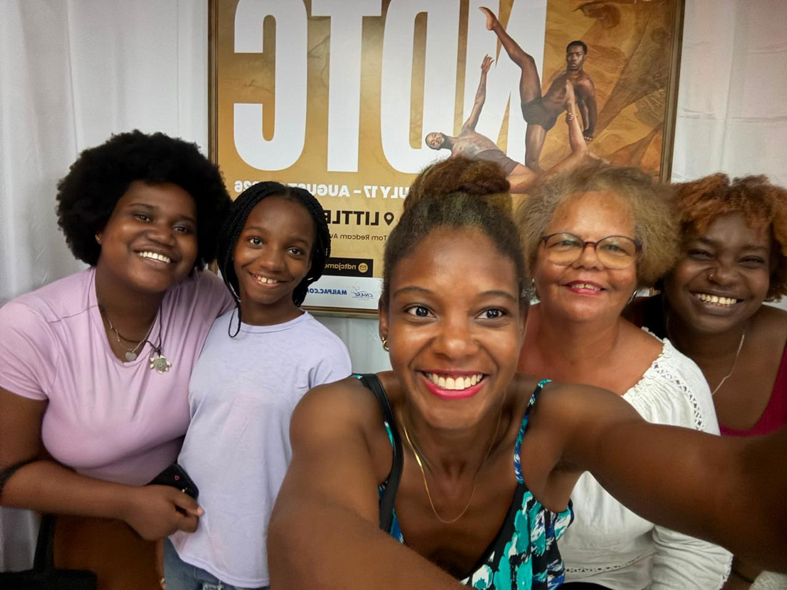

I spent another summer this year interning at Wisynco Group Ltd in their software department.
I learnt many things such as database scripting and team building.
I also did a lot of AI research to prepare the company to work with AI in future.
While working there, I got the chance to speak with members of the infrastructure team
and learnt the certifications I may need in order to pursue a career in cybersecurity.
One of the Microsoft course that I was recommended to take was Microsoft Security, Compliance, and Identity Fundamentals.
That course is one of the many courses that I will be taking in order to prepare for a career in cybersecurity.
Along with the many things I had learnt during my 4-summer recurring internship,
I would have added a question of the day to foster communication within the department.
One of the main questions that I can recall that started a lot of discussion was "What foods do you think people are pretending to like?".
This caused a two day discussion which brought the team closer together and allowed us to learn more about each other.
I hope to one day have a team of my own that will have that strong bond.
Social life in the summer
by Ayanna Wizzard

During the summer, I spent a lot of time with my family and friends when I was not working.
I went to a National Dance Theatre Company of Jamaica's performance with my sister, my mother and my mother's friends.
This performance was very entertaining, not just to me but also to my 9 year old sister who originally did not want to attend.
I also celebrated my mother's birthday at a new restaurant with my sister.
We had a great time trying a new cuisine and celebrating my mother's birthday.
My sister and I also watched Spider-Man this summer and we thoroughly enjoyed it. We are both looking forward to the next Spider-Man movie.
Outside of my family, I also spent time with my friends. I had originally watched spider-man with two close friends.
Afterwards, we grabbed dinner at a nearby restaurant and caught up while making plans for the school year.
I was on calls frequently with another group of friends and we spent a lot of time playing games online.
Alongside this, one of my coworkers treated me to lunch on my final day of summer internship.
I hope next summer, I will be able to spend more time with my friends and family while also working on my career goals.